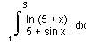
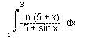
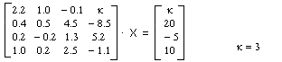
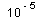

Numericka matematika
jun '97.
asistent: Milan Drazic, smer: N, V
1. Na [4, 9] tabelirati  sa
korakom h= 0.5 sa 5 decimala, zatim koristeci inverznu interpolaciju odrediti
obe koordinate maksimuma ove funkcije.
sa
korakom h= 0.5 sa 5 decimala, zatim koristeci inverznu interpolaciju odrediti
obe koordinate maksimuma ove funkcije.
2. Sa tacnoscu  izracunati
: 
izracunati
: 
3. Metodom LU dekompozicije, racunajuci sa 5 decimala, resiti sistem:

4. Metodom Newtona sa tacnoscu naci sva resenja jednacine: ch x = 2 + x.